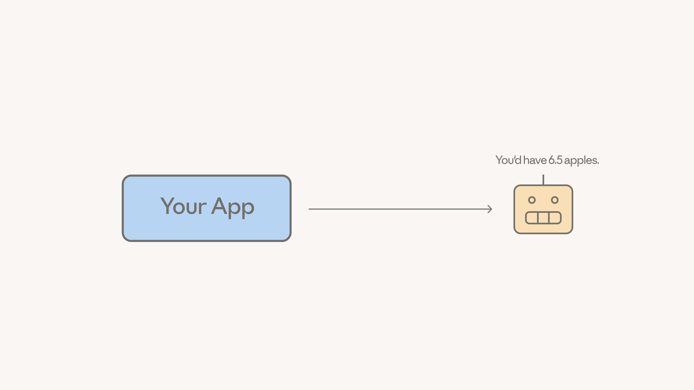
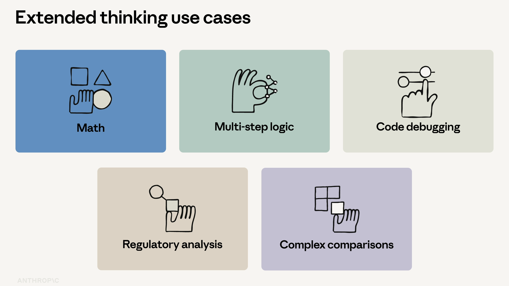
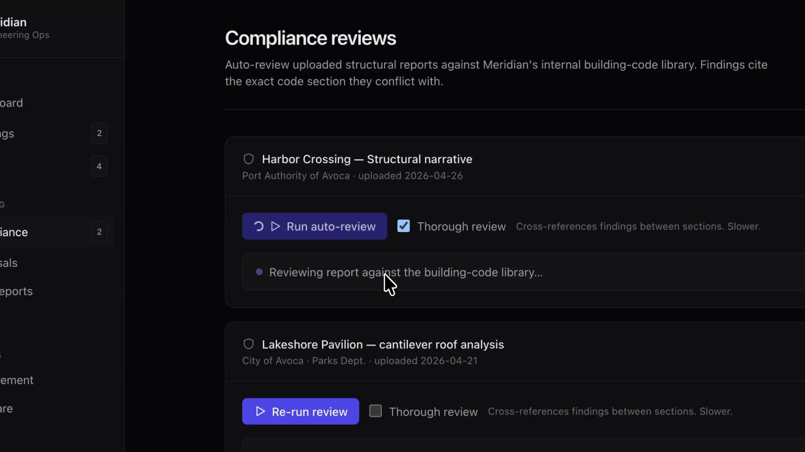

Что такое thinking
Чему научитесь
Видео 2:23 и текст урока
К концу урока вы сможете:
- объяснить, что даёт thinking и почему без него модель может уверенно ошибиться в многошаговой задаче;
- включить показ рассуждений через
"display": "summarized"и задать их глубину параметром effort внутриoutput_config; - решать, в каких задачах thinking окупается, а где только увеличивает задержку и стоимость.
Видео и текст урока.
Некоторым задачам мало быстрого ответа. Claude может обдумать задачу, прежде чем ответить, — эта возможность называется extended thinking. В этом уроке разберём, что такое thinking, как он работает и когда действительно помогает.
Вот какого сбоя мы хотим избежать. Если задать модели многошаговый вопрос и заставить её ответить сразу, она может уверенно ошибиться:

Что такое extended thinking
Extended thinking позволяет Claude рассуждать шаг за шагом, прежде чем дать итоговый ответ. Когда режим включён, Claude генерирует внутренние токены рассуждения — их часто называют цепочкой рассуждений (chain of thought), — а затем выдаёт ответ. На Claude Opus 5 текст рассуждения остаётся скрытым, если только настройка thinking в вашем запросе не содержит "display": "summarized", как в примере ниже. Тогда вместе с итоговым текстом в ответе приходит краткое изложение рассуждений Claude.
Adaptive thinking на Claude Opus 5
На Opus 5 thinking работает в режиме adaptive и включён по умолчанию. Выбирать бюджет токенов не нужно: Claude сам по ходу работы решает, когда думать и сколько.
Чтобы управлять тем, сколько думает Claude, используйте параметр effort. Здесь есть подвох: он задаётся внутри output_config, а не рядом с блоком thinking. Уровни такие:
low;medium;high(по умолчанию);xhigh(extra high, очень высокий);max.
Когда его включать (и когда нет)
Extended thinking помогает в таких задачах:
- математика и многошаговая логика;
- отладка кода;
- анализ нормативных требований;
- всё, где приходится искать компромисс или сравнивать варианты.

Не включайте его для простой классификации, извлечения данных или шаблонного текста. В таких задачах он только увеличивает задержку и стоимость, а результат не улучшает.
Thinking на практике
Посмотрим, как это работает. Вот цикл агента с одним инструментом, который узнаёт погоду. Попросим Claude спланировать поездку на машине из Сан-Франциско — с двумя остановками, с учётом погоды и времени в пути. Здесь приходится искать настоящий компромисс — это как раз такой вопрос, где thinking себя оправдывает.
import anthropic
client = anthropic.Anthropic()
weather_tool = {
"name": "get_weather",
"description": "Get the current weather for a city.",
"input_schema": {
"type": "object",
"properties": {
"city": {"type": "string", "description": "City name"}
},
"required": ["city"],
},
}
response = client.messages.create(
model="claude-opus-5",
max_tokens=16000,
thinking={"type": "adaptive", "display": "summarized"}, # summarized = return the reasoning text
output_config={"effort": "high"}, # low | medium | high | xhigh | max
tools=[weather_tool],
messages=[
{
"role": "user",
"content": "Plan a road trip out of San Francisco with two stops, "
"weighing weather and drive time.",
}
],
)
Если запустить этот код, вывод окажется интереснее обычного. Вы увидите блоки thinking, в которых Claude взвешивает варианты, затем вызовы инструмента, проверяющие каждый город, и, наконец, текстовый блок с самой рекомендацией.
Рассуждение видно — в этом весь смысл.
Почему это важно в продакшене
В рабочем приложении это разница между агентом, который находит проблемы по одной, и агентом, который связывает их воедино. Возьмём приложение для проверки документов на соответствие нормам: если включить adaptive thinking в вызове автопроверки, агент сможет рассуждать, сопоставляя разделы отчёта между собой, — и заметит, например, что требование к ветровой нагрузке в третьем разделе противоречит спецификации материала в другом месте документа.

Итог
- Extended thinking даёт Claude возможность порассуждать, прежде чем ответить. На Opus 5 краткое изложение этих рассуждений приходит в ответе, только если вы его запросили.
- На Opus 5 adaptive thinking включён по умолчанию — бюджет токенов не нужен. Добавьте
"display": "summarized", чтобы видеть рассуждение в ответе. - Глубину регулируйте параметром effort внутри
output_config:low,medium,high(по умолчанию),xhighилиmax. - Включайте thinking для трудных задач, где приходится искать компромиссы. Для простых не включайте — там он только увеличивает задержку и расход токенов.
Дальше
Следующий урок — «Встроенные инструменты»: готовые серверные инструменты Anthropic, например веб-поиск и выполнение кода: их достаточно объявить в запросе, а выполняет их сама Anthropic.
Оригинал урока: What is thinking?.